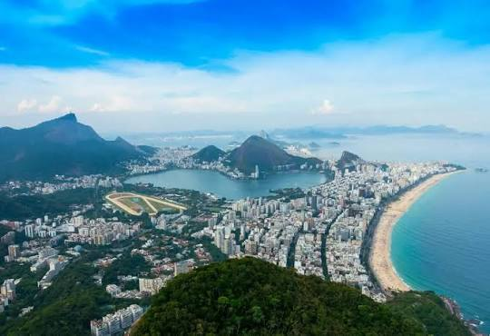

Over onze website
Welkom bij Trio Travel & Taste! Wij hebben deze website gemaakt voor mensen die geïnteresseerd zijn in reizen, verschillende culturen en eten. Op onze website nemen we bezoekers mee naar drie verschillende landen: Brazilië, Turkije en Mexico. We laten per land een bekende bezienswaardigheid en een traditioneel gerecht zien. Zo willen we bezoekers op een leuke manier kennis laten maken met andere landen en culturen.
Onze doelgroep
Onze website is bedoeld voor mensen die graag reizen, nieuwe plekken willen ontdekken of geïnteresseerd zijn in gerechten uit andere landen. Ook is de website geschikt voor mensen die inspiratie zoeken voor hun volgende vakantie. We hebben geprobeerd de informatie duidelijk en overzichtelijk te houden, zodat iedereen de website makkelijk kan gebruiken.
Ons ontwerp
Voor het ontwerp hebben we gekozen voor rustige, warme kleuren die goed bij het onderwerp reizen en cultuur passen. We gebruiken foto's om de landen en gerechten aantrekkelijker te laten zien. Daarnaast hebben we gekozen voor korte teksten, zodat bezoekers snel de belangrijkste informatie kunnen vinden. De navigatiebalk zorgt ervoor dat je makkelijk tussen de verschillende pagina's kunt wisselen.
Taakverdeling
Tuana
Ik heb me vooral beziggehouden met het bouwen en indelen van de website. Ik heb de HTML-pagina's gemaakt, de verschillende onderdelen toegevoegd en ervoor gezorgd dat alle pagina's met elkaar verbonden zijn. Ook heb ik nagedacht over de structuur en het ontwerp. Mijn doel was om een overzichtelijke en aantrekkelijke website te maken die makkelijk te gebruiken is.


Rachel
Ik heb me vooral beziggehouden met het verzamelen en controleren van informatie over de verschillende landen, bezienswaardigheden en traditionele gerechten. Ook heb ik meegedacht over de teksten en afbeeldingen. Ik vond het belangrijk dat de informatie duidelijk was en goed bij het onderwerp van de website paste.
Samenwerking
Tijdens het maken van de website hebben we regelmatig overlegd en ideeën uitgewisseld. We hebben samen keuzes gemaakt over de inhoud en het ontwerp. Ook hebben we gekeken wat er nog verbeterd kon worden. Trio Travel & Taste is ook een combinatie van onze achtergronden: de Turkse achtergrond van Tuana en de Braziliaanse achtergrond van Rachel. We hebben onze eigen websites samengevoegd. Zo kwamen we op het idee om verschillende landen te laten zien en daarbij ook hun traditionele gerechten te promoten. Door onze ideeën te combineren, hebben we stap voor stap gewerkt aan Trio Travel & Taste.
Onze favorieten
| Wie? | Favoriete onderdeel |
|---|---|
| Tuana | De verschillende culturen en gerechten |
| Rachel | De foto's en de combinatie van de culturen |
| Samen | Het combineren van cultuur, reizen en eten. |
Ons doel
Met Trio Travel & Taste willen we laten zien dat reizen niet alleen gaat om het bezoeken van mooie plekken, maar ook om het ontdekken van andere culturen en het proeven van lokale gerechten. We hopen dat bezoekers door onze website nieuwsgierig worden naar Brazilië, Turkije en Mexico!
Wat maakt reizen zo bijzonder?
- Nieuwe culturen en tradities leren kennen.
- Bijzondere plekken ontdekken.
- Lokale gerechten en smaken proeven.
- Mooie herinneringen maken.
Laat een reactie achter!
Heb je vragen of wil je vertellen wat je van onze website vindt? Vul dan het formulier in!